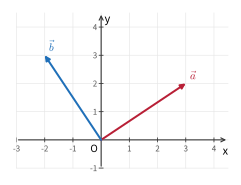
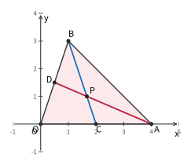
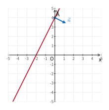
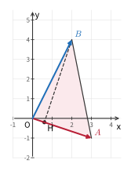

別冊章末問題の解答
1. \(\vec a=\left(3,\ 2\right),\ \vec b=\left(-2,\ 3\right)\) のとき、内積 \(\vec a\cdot\vec b\)、\(|\vec a|,\ |\vec b|\)、およびなす角 \(\theta\) を求めよ。
内積
\(\vec a\cdot\vec b=a_1b_1+a_2b_2\)。
\[\vec a\cdot\vec b=\left(3\right)\times\left(-2\right)+\left(2\right)\times\left(3\right)=0\]大きさ
\[|\vec a|=\sqrt{\left(3\right)^2+\left(2\right)^2}=\sqrt{13},\qquad |\vec b|=\sqrt{\left(-2\right)^2+\left(3\right)^2}=\sqrt{13}\]\(\cos\theta\) を求める
\(\cos\theta=\dfrac{\vec a\cdot\vec b}{|\vec a||\vec b|}\)。
\[\cos\theta=\dfrac{0}{\sqrt{13}\times\sqrt{13}}=0\]なす角
\[0^\circ\leqq\theta\leqq180^\circ\ \text{より}\ \theta=90^\circ\]
（例題1の型）
【答案】
\[\vec a\cdot\vec b=0,\ |\vec a|=\sqrt{13},\ |\vec b|=\sqrt{13},\ \theta=90^\circ\]答
2. \(|\vec a|=3,\ |\vec b|=5,\ \vec a\cdot\vec b=4\) のとき、(1) \(|\vec a-2\vec b|\) (2) \(\vec a+t\vec b\) と \(\vec a-\vec b\) が垂直になる \(t\) の値を求めよ。
\(|k\vec a+l\vec b|^2\) を展開
\(|k\vec a+l\vec b|^2=k^2|\vec a|^2+2kl\,\vec a\cdot\vec b+l^2|\vec b|^2\)。
\[|\vec a-2\vec b|^2=1\cdot9+-4\cdot4+4\cdot25=93\]大きさを求める
\[|\vec a-2\vec b|=\sqrt{93}=\sqrt{93}\]垂直条件
\((\vec a+t\vec b)\cdot(\vec a-\vec b)=0\) を展開する。
\[|\vec a|^2-\vec a\cdot\vec b+t\,\vec a\cdot\vec b-t|\vec b|^2=0\]\[9-4+4\,t-25\,t=0\ \Rightarrow\ -21\,t=-5\]\[t=\dfrac{5}{21}\]（例題2の型）
【答案】
\[\text{(1) }\sqrt{93}\quad\text{(2) }t=\dfrac{5}{21}\]答
3. △\(OAB\) で、辺 \(OA\) 上に \(OC=\dfrac{1}{2}\,OA\) となる点 \(C\)、辺 \(OB\) 上に \(OD=\dfrac{1}{2}\,OB\) となる点 \(D\) をとる。\(AD\) と \(BC\) の交点を \(P\) とするとき、\(\overrightarrow{OP}\) を \(\vec a=\overrightarrow{OA}\)、\(\vec b=\overrightarrow{OB}\) で表せ。
点を位置ベクトルで表す
\(\overrightarrow{OA}=\vec a,\ \overrightarrow{OB}=\vec b\) とすると
\[\overrightarrow{OC}=\dfrac{1}{2}\vec a,\qquad \overrightarrow{OD}=\dfrac{1}{2}\vec b\]直線 \(AD\) 上の点として表す
\(AP:PD=u:(1-u)\) とおくと（\(\overrightarrow{OP}=(1-u)\overrightarrow{OA}+u\overrightarrow{OD}\)）
\[\overrightarrow{OP}=(1-u)\vec a+\dfrac{1}{2}\,u\,\vec b\quad\cdots①\]直線 \(BC\) 上の点として表す
\(BP:PC=v:(1-v)\) とおくと
\[\overrightarrow{OP}=\dfrac{1}{2}\,v\,\vec a+(1-v)\vec b\quad\cdots②\]係数を比較する
\(\vec a,\vec b\) は一次独立なので、①②の係数が等しい。
\[\begin{cases}1-u=\dfrac{1}{2}\,v\\ \dfrac{1}{2}\,u=1-v\end{cases}\]\[u=\dfrac{2}{3},\quad v=\dfrac{2}{3}\]答え
\[\overrightarrow{OP}=\dfrac{1}{3}\vec a+\dfrac{1}{3}\vec b\]
（例題3の型）
【答案】
\[\overrightarrow{OP}=\dfrac{1}{3}\vec a+\dfrac{1}{3}\vec b\]答
4. 点 \(A\left(0,\ 4\right)\) を通り、\(\vec n=\left(2,\ -1\right)\) に垂直な直線の方程式を求めよ。また、原点とこの直線の距離を求めよ。
法線ベクトルとの垂直条件
直線上の点 \(P(x,y)\) について \(\overrightarrow{AP}\perp\vec n\)、つまり
\[\vec n\cdot\overrightarrow{AP}=0\]成分で書く
\[\left(2\right)(x-\left(0\right))+\left(-1\right)(y-\left(4\right))=0\]\[2 x - y + 4=0\]原点からの距離
\(ax+by+c=0\) と点 \((x_0,y_0)\) の距離は \(\dfrac{|ax_0+by_0+c|}{\sqrt{a^2+b^2}}\)。
\[\dfrac{|4|}{\sqrt{\left(2\right)^2+\left(-1\right)^2}}=\dfrac{4}{\sqrt{5}}=\dfrac{4 \sqrt{5}}{5}\]
（例題4の型）
【答案】
\[2 x - y + 4=0,\ \ \text{距離 }\dfrac{4 \sqrt{5}}{5}\]答
5. 座標平面上に \(O(0,0),\ A\left(3,\ -1\right),\ B\left(2,\ 4\right)\) がある。△\(OAB\) の面積と、\(B\) から直線 \(OA\) に下ろした垂線の足 \(H\) の座標を求めよ。
面積の公式
\(\triangle OAB=\dfrac12\sqrt{|\vec a|^2|\vec b|^2-(\vec a\cdot\vec b)^2}=\dfrac12|a_1b_2-a_2b_1|\)。
\[S=\dfrac12\left|\left(3\right)\times\left(4\right)-\left(-1\right)\times\left(2\right)\right|=7\]垂線の足 \(H\) の式
\(H\) は直線 \(OA\) 上にあるので \(\overrightarrow{OH}=k\vec a\)。
\[\overrightarrow{BH}\cdot\vec a=0\ \Rightarrow\ (k\vec a-\vec b)\cdot\vec a=0\ \Rightarrow\ k=\dfrac{\vec a\cdot\vec b}{|\vec a|^2}\]\(k\) と \(H\) の座標
\[k=\dfrac{2}{10}=\dfrac{1}{5}\]\[\overrightarrow{OH}=\dfrac{1}{5}\left(3,\ -1\right)=\left(\dfrac{3}{5},\ - \dfrac{1}{5}\right)\]
（例題5の型）
【答案】
\[S=7,\ H\left(\dfrac{3}{5},\ - \dfrac{1}{5}\right)\]答